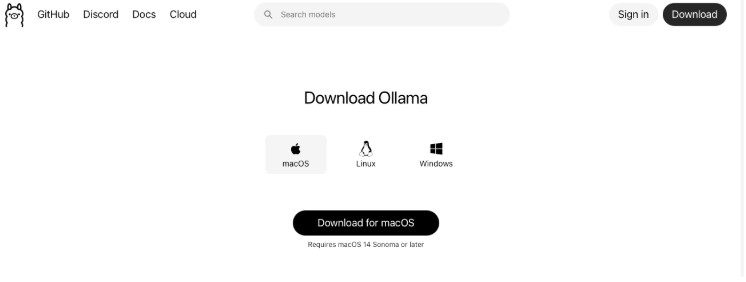
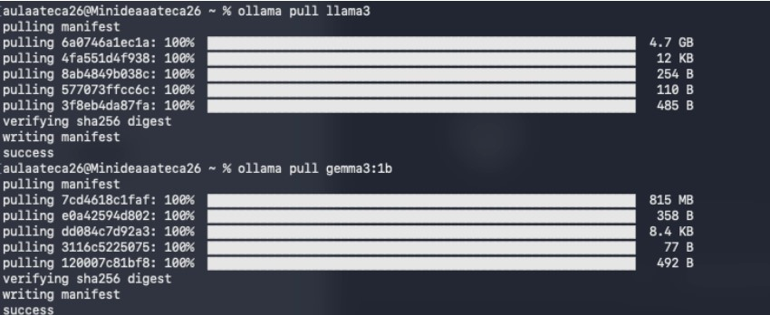
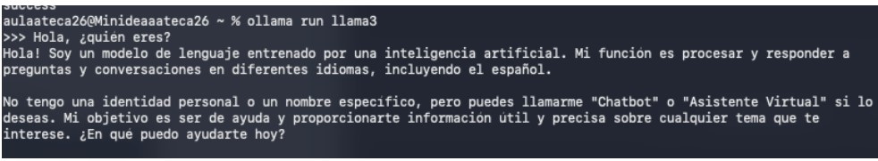
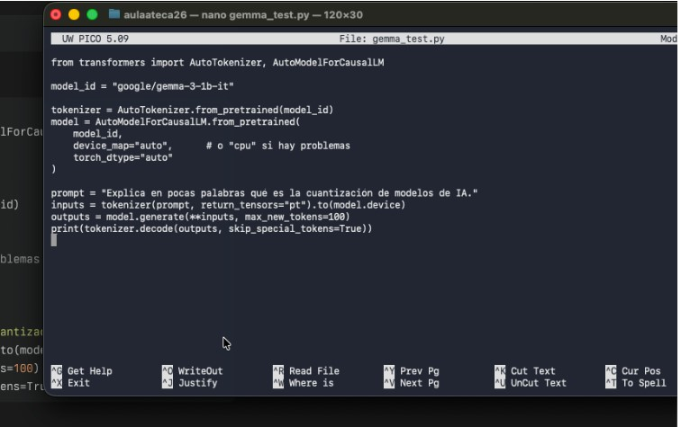
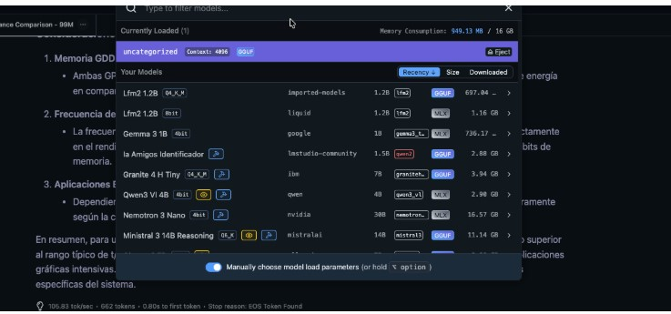
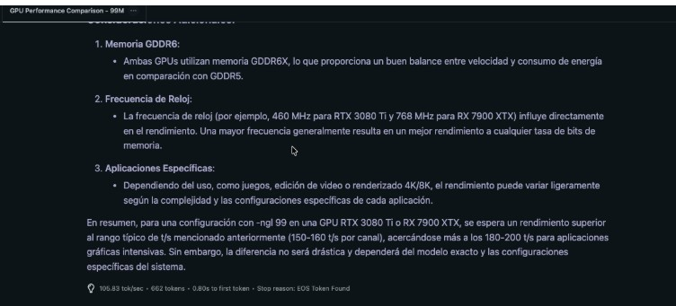
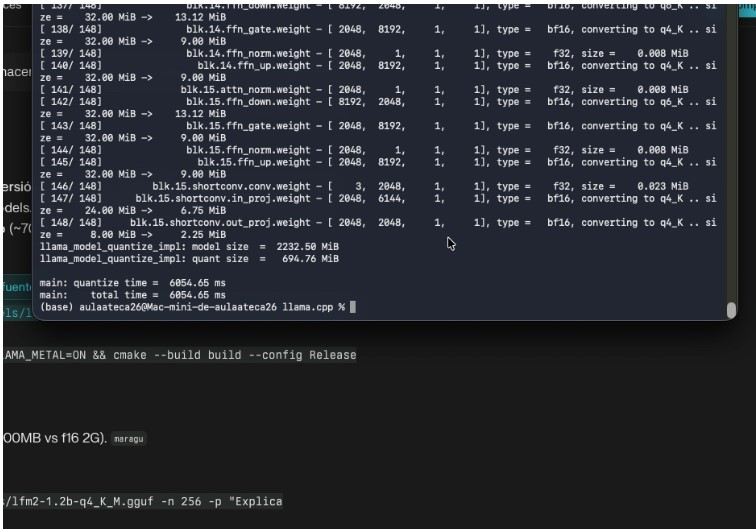

Las 8 Capturas del Proceso

Foto 1
Descarga Ollama macOS
Página oficial GitHub de Ollama para macOS. Plataforma clave para ejecutar LLMs localmente sin conexión a internet.
Requisito: macOS 12+ • Botón "Download macOS"
Requisito: macOS 12+ • Botón "Download macOS"

Foto 2
Verificación Ollama v0.14.1
ollama --version
ollama version is 0.14.1
Confirmación exitosa de instalación. Terminal lista para descargar modelos de IA.
ollama version is 0.14.1

Foto 3
Descarga Llama3 + Gemma
Proceso de descarga completado:
• Llama3: 4.7GB (100%)
• Gemma: 5GB (100%)
Verificación de manifiestos OK ✓
• Llama3: 4.7GB (100%)
• Gemma: 5GB (100%)
Verificación de manifiestos OK ✓

Foto 4
Chat Interactivo Llama3
ollama run llama3
>>> Hola, ¿quién eres?
Respuesta coherente en español del modelo sin cuantización. ¡Funciona perfecto!
>>> Hola, ¿quién eres?

Foto 5
Script Python Tokenización
Código Python cargando Gemma-2B para análisis:
AutoTokenizer.from_pretrained("google/gemma-2b")
AutoModelForCausalLM
Preparación para proceso de cuantización.

Foto 6
Comparativa GPUs GDDR6
Análisis rendimiento GPUs sin cuantización:
RTX 4090/3080 Ti/3090/7900 XTX
Memoria GDDR6X vs GDDR6 • Rendimiento en -ngl 99
RTX 4090/3080 Ti/3090/7900 XTX
Memoria GDDR6X vs GDDR6 • Rendimiento en -ngl 99

Foto 7
GPU Performance Chart
Gráfico detallado rendimiento:
• RTX 4090: Máximo FPS/tokens
• RTX 3080 Ti: Equilibrio óptimo
• RTX 7900 XTX: Mejor precio/rendimiento
• RTX 4090: Máximo FPS/tokens
• RTX 3080 Ti: Equilibrio óptimo
• RTX 7900 XTX: Mejor precio/rendimiento

Foto 8
llama.cpp Cuantización Q4_K_M
llama-quantize ... q4_k_m
main: quantizing time: 468.65s
PROCESO COMPLETO: Metal GPU macOS • Q4_K_M exitoso ✓
main: quantizing time: 468.65s
SIN vs CON Cuantización
SIN Cuantización
- 📏 4-8GB RAM/VRAM
- ⚡ RTX 4090/3090 necesaria
- ⭐ Precisión 100%
- 🐌 Lento en PC normal
CON Q4_K_M
- 📏 1-2GB RAM (75% menos)
- ⚡ Mac/PC normal OK
- ⭐ 95-98% calidad
- 🚀 3x más rápido